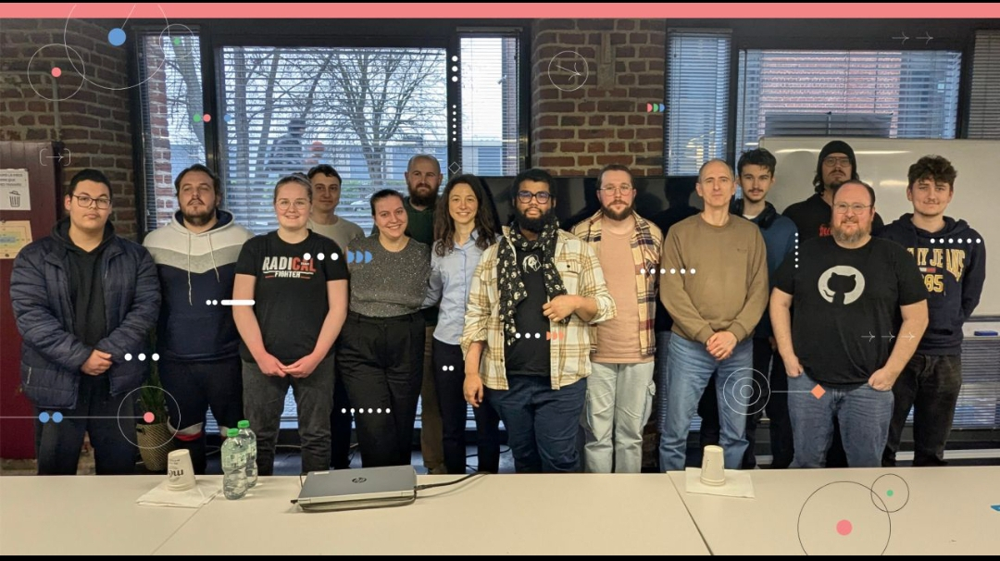

X
Mentions légales et crédits
Projet :
Tech Voices est un site fictif réalisé dans le cadre
de ma candidature en Web@cadémie (Epitech Lille). Ce projet a
une vocation exclusivement pédagogique.
Éditeur :
Élise B. (
@DevWithElise) - Candidate à la formation Web@cadémie pour devenir
développeuse web.
Hébergement :
Ce site est hébergé par GitHub Pages, un service gratuit proposé par
GitHub.
Crédits :
-
Textes : les contenus ont été générés avec l'aide d'une intelligence
artificielle, adaptés et améliorés dans le cadre de mon projet.
- Images : ressources libres de droit issues de Freepik.
- Illustrations : ressources libres issues de Storyset
- Icônes : Flaticon et Iconify
Propriété intellectuelle :
Les contenus de ce site sont utilisés uniquement dans un cadre de
présentation de compétences. Aucune exploitation commerciale n'est
réalisée.
Remerciements
Merci !
Au programme BTech et à Florian qui a réussi à m'apprendre les bases
du HTML et du CSS et à me pousser à me surpasser et continuer d'apprendre.
Merci !
À toutes les personnes que j'ai eu la chance de rencontrer durant la session
n°48. Que ce soit pendant les exercices individuels, les exercices de groupe,
j'ai pu apprendre de nouvelles choses et aider les autres à également monter
en compétence.
Merci !
Aux membres du jury, composés de Cléa (de Emmaüs Label École), Antoine et Marie
(de l'Association Z) dont leurs conseils ont été précieux.
Merci !
À toutes les personnes qui ont tenu jusqu’à la présentation finale de BTech,
on s’est tous dépassés et on peut être fiers du travail accompli.
Merci à toute l’équipe qui a tenu jusqu’au bout de ce mois et demi d’initiation. Mention spéciale à :
Ilana, Jérémy, Anaïs, Andrew, Mattéo, Cyril, Freddy, Laurent, Arnaud, Marianno, Clément, Ugo et Nabil.

Photo issue de LinkedIn, @Programme BTech by Z - Code pour l'emploi